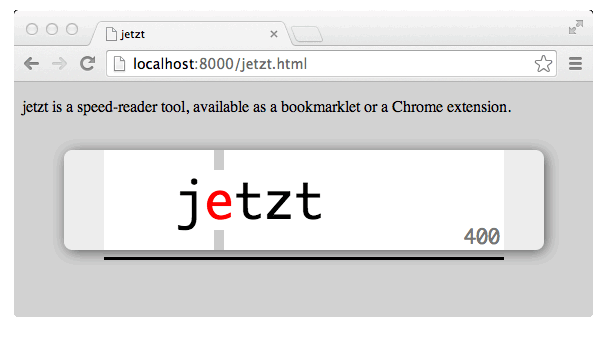

A free and open source speed-reader extension for Chrome, and bookmarklet for other browsers.
Chrome Extension: This is beta software, so a proper chrome extension package is not yet provided. Meanwhile, please follow these steps:
Remember to pull every now and then for bugfixes and new features.
Bookmarklet: Drag and drop this link to your bookmarks bar: jetzt
This version uses the latest online files, this means it will stay up to date.
To use the bookmarklet offline, bookmark the following link: jetzt.
This is what jetzt will look like once activated:

Control is currently keyboard-only.
Initiate jetzt by pressing alt-s and clicking on the block of text you wish to read. Alternatively, select some text before pressing alt-s.
Change size with +/-.
Go faster/slower with up/down arrow keys.
Go back/forward a sentence with left/right arrow keys (hold alt to navigate by paragraphs).
Pause with space.
Close with escape.
Switch between light/dark themes with 0
Toggle summary stats with / or ? at the end of a run
We're looking for contributors! You can fork this project, contribute pull requests, and look through and fix one of our issues if you like. Thanks!